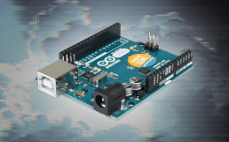

Arduino Nasıl Kurulur? Görsellerle Adım Adım Anlatım

Donanım programlamaya ve gömülü sistemlere adım atmak isteyen mühendislik öğrencileri için Arduino en erişilebilir açık kaynaklı platformlardan biridir. Üzerindeki mikrodenetleyici sayesinde sensörlerden gelen verileri okuyabilir ve motorları, LED'leri veya ekranları kolayca kontrol edebilirsiniz.
1. Arduino IDE Kurulum Adımları
Arduino kartına kod yükleyebilmek için öncelikle bilgisayarımıza Arduino IDE yazılımını kurmamız gerekir:
- Resmi Arduino web sitesinden işletim sisteminize uygun kurulum paketini indirin.
- Kurulum sırasında USB sürücülerinin yüklenmesine izin verin.
- Arduino UNO kartınızı USB kablosuyla bilgisayara bağlayın.
- Üst menüden Araçlar → Kart → Arduino UNO ve bağlı olduğu Port (COM) seçimini yapın.

2. Arduino UNO Temel Pin Yapısı
Devre kurarken kart üzerindeki pinlerin görevlerini bilmek kısa devreleri önlemek açısından önemlidir:
| Pin Grubu | Pin Aralığı | Kullanım Amacı |
|---|---|---|
| Dijital Pinler | D0 – D13 | 0V (LOW) veya 5V (HIGH) dijital giriş/çıkış işlemleri |
| Analog Girişler | A0 – A5 | Sensörlerden gelen 0–1023 arası analog değerleri okuma |
| Güç Pinleri | 5V, 3.3V, GND | Devre bileşenlerine gerilim ve topraklama sağlama |
3. İlk Uygulama: setup() ve loop() Yapısı
Arduino programları temel olarak iki fonksiyondan oluşur: kart çalıştığında bir kez yürütülen setup() ve sürekli tekrar eden loop(). Aşağıdaki örnek kodu kartınıza yükleyerek dahili LED'i 1 saniye aralıklarla yakıp söndürebilirsiniz:
void setup() {
pinMode(13, OUTPUT);
}
void loop() {
digitalWrite(13, HIGH);
delay(1000);
digitalWrite(13, LOW);
delay(1000);
}